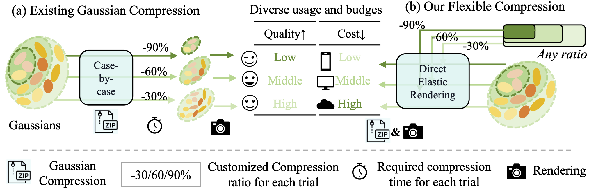

FlexGS enables elastic inference, balancing quality and computational costs for diverse deployment scenarios with dynamic compression at any ratio without re-training.
3D Gaussian splatting (3DGS) has enabled various applications in 3D scene representation and novel view synthesis due to its efficient rendering capabilities. However, 3DGS demands significant GPU memory, limiting its use on devices with restricted computational resources. Previous approaches have focused on pruning less important Gaussians, effectively compressing 3DGS but often requiring a fine-tuning stage and lacking adaptability for the specific memory needs of different devices. In this work, we present an elastic inference method for 3DGS. Given an input for the desired model size, our method selects and transforms a subset of Gaussians, achieving substantial rendering performance without additional fine-tuning. We introduce a tiny learnable module that controls Gaussian selection based on the input percentage, along with a transformation module that adjusts the selected Gaussians to complement the performance of the reduced model. Comprehensive experiments on ZipNeRF, MipNeRF and Tanks&Temples scenes demonstrate the effectiveness of our approach. Code will be publicly available.
FlexGS enables elastic inference, balancing quality and computational costs for diverse deployment scenarios with dynamic compression at any ratio without re-training.
(a) Adaptive Gaussian Selector: utilize a GsNet to get the differentiable mask and Global Important as guidance for adaptive selection; (b) Gaussian Transform Field: query from a Spatial-Ratio Neural Field and get the transforms of Gaussian attributes under the given elastic ratio, Then supervise the rendering image with the GT of the view.
Below are rendering quality comparisions between our method and the baseline method LightGS. Given a relatively small compression ratio, our method can preserve more details on the rendering results.
@InProceedings{Liu_2025_CVPR,
author = {Liu, Hengyu and Wang, Yuehao and Li, Chenxin and Cai, Ruisi and Wang, Kevin and Li, Wuyang and Molchanov, Pavlo and Wang, Peihao and Wang, Zhangyang},
title = {FlexGS: Train Once, Deploy Everywhere with Many-in-One Flexible 3D Gaussian Splatting},
booktitle = {Proceedings of the Computer Vision and Pattern Recognition Conference (CVPR)},
month = {June},
year = {2025},
pages = {16336-16345}
}